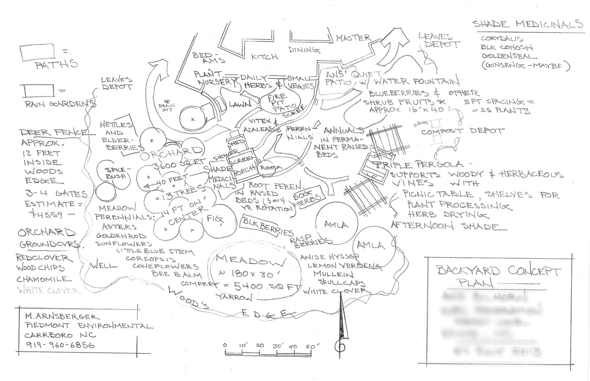
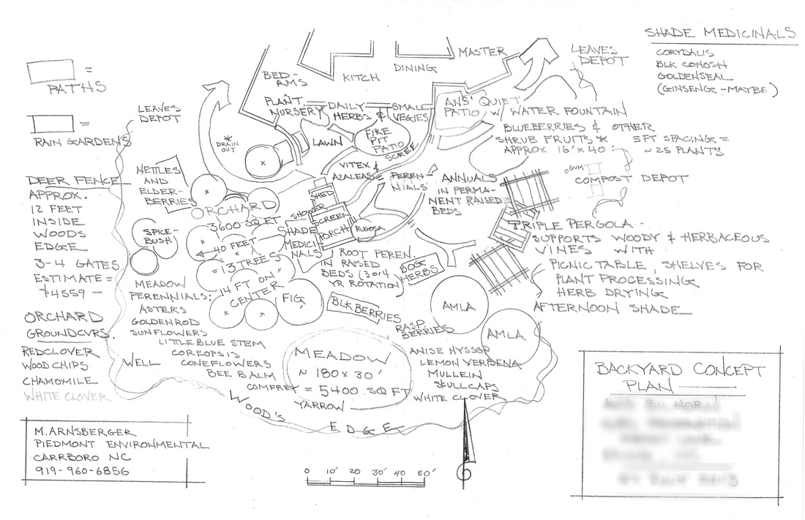

Consultations & Design
Piedmont Environmental's emphasis in residential landscape design is the application of ecological principles. Ecological principles are the building blocks that make natural environments dynamic and resilient, supporting a rich diversity of organisms coexisting, complementing one another and creating a sum greater than their parts.
What We Emphasize
- Developing natural plant communities that fit within our regional vernacular
- Creating more diverse ecosystems resulting in fewer problems
- Working with succession to allow plants to mature to their ultimate size gracefully and not become pruning nightmares.
- Building good soil fertility rich in organic matter and at the right soil pH
- Attracting favorable wildlife such as birds, butterflies and pollinator insects.

 



What We Can Design
Our designs include foundation plantings, mixed border beds, woodland shade gardens, rock gardens, rain gardens and Piedmont meadows. A naturally planned and developed landscape usually also requires less work to maintain.
What to Expect in a Consultation
- Consultations typically take 90 minutes.
- We will walk around your property assessing the soil, topography, pedestrian flow, and zones of human activity.
- We will evaluate light exposure, views, and discuss existing plants.
- We will advise how best to restore, repair or replace your existing landscaping.
Pricing:
$75 per hour
Book a Consultation →